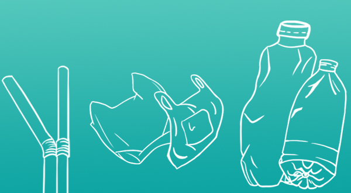

你知道吗?你随手丢掉的塑料垃圾，如果没有得到妥善处置的话，极有可能进入海洋，并以多种方式影响着海洋的生物永生态环境。
海洋中还有很多不可见的隐形污染,如农药、持久性有机污染物、重金属、和内分泌干扰物等,等着我们去了解、发现和解决。
城市建设急剧增速，房地产业的飙升以及建筑业的无度开发和过剩，这给人们生活带来便利的同时，也必然造成一系列弊端，工业和城市垃圾、船舶废弃物、工程渣土和疏浚物，这些固体废弃物严重损害了海洋环境。
每年排入海洋的石油污染物约1千万吨，主要是由工业生产，包括海上油井管道泄漏、油轮事故、船舶排污等造成的，特别是一些突发性的事故，一次泄漏的石油量可达10万吨以上，这种情况的出现，大片海水被油膜覆盖，将促使海洋生物大量死亡，严重影响海产品的价值，以及其他海上活动。